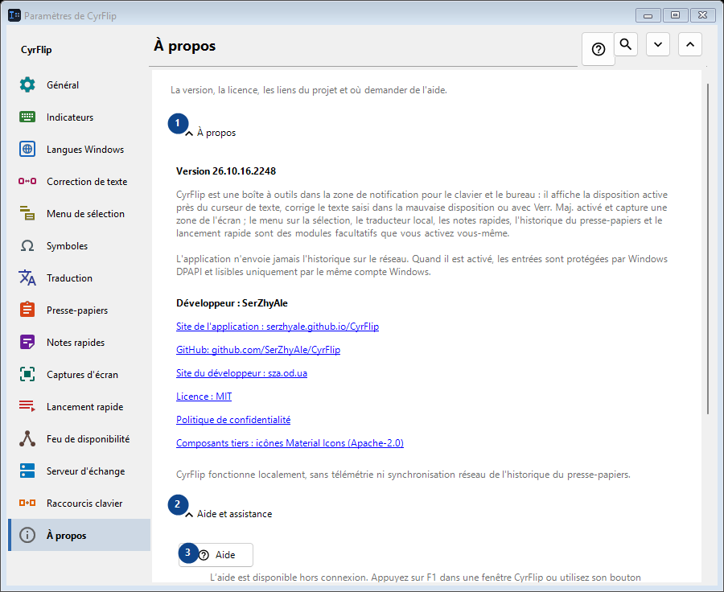
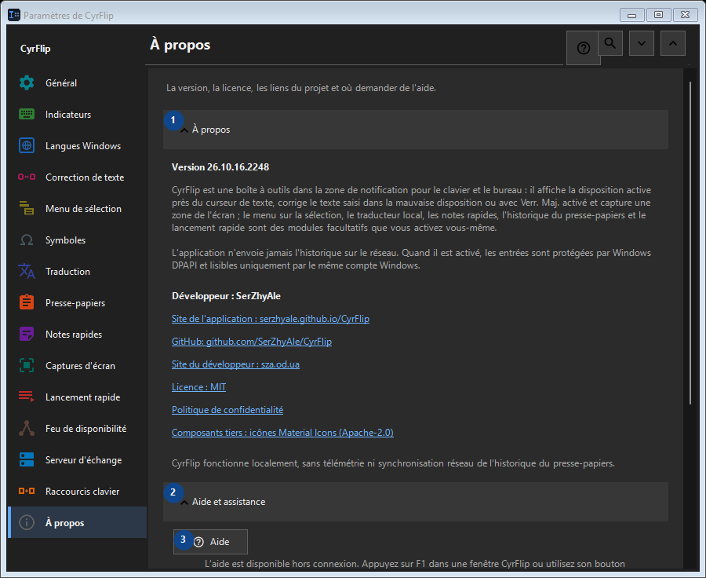

À propos
À quoi cela sert
La version, la licence, les liens du projet et où demander de l'aide.


Ordre des actions
Les réglages s’appliquent immédiatement. Aucun ordre n’est imposé ; utilisez les groupes ci-dessous.
Éléments
1. À propos
Utilisez cette commande pour l’action indiquée. Lisez toute confirmation avant de l’accepter.
Vos raccourcis2. Aide et assistance
Utilisez cette commande pour l’action indiquée. Lisez toute confirmation avant de l’accepter.
Vos raccourcis3. Aide
L’aide est disponible hors connexion. Appuyez sur F1 dans une fenêtre CyrFlip ou utilisez son bouton d’aide.
Vos raccourcis4. Afficher la visite de bienvenue..
Découvrez CyrFlip et configurez-le.
Vos raccourcis5. Diagnostiquer la position du curseur...
Crée un rapport local sur la façon dont Windows et UI Automation voient le curseur. À utiliser seulement si le marqueur est absent ou mal placé dans une application précise.
Vos raccourcis6. Envoyer les journaux à l'auteur..
Rassemble les journaux de CyrFlip dans une archive et ouvre un message à l'auteur avec cette pièce jointe. C'est vous qui l'envoyez - CyrFlip ne transmet rien sur le réseau. L'historique du presse-papiers n'y figure jamais.
Vos raccourcis